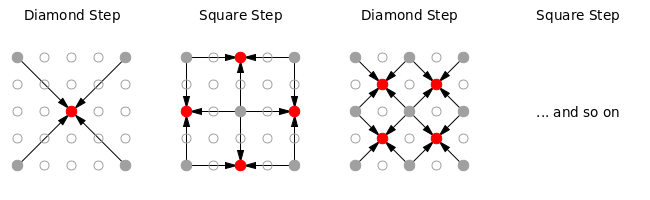

author: niplav, created: 2020-11-20, modified: 2024-12-15, language: english, status: in progress, importance: 4, confidence: highly likely
The Diamond-Square algorithm is a terrain-generation algorithm for two dimensions (producing a three-dimensional terrain). I generalize the algorithm to any positive number of dimensions, and analyze the resulting algorithm.
Libre de la metáfora y del mito
labra un arduo cristal: el infinito
mapa de Aquel que es todas Sus estrellas.
— Jorge Luis Borges, “Spinoza”, 1964
I learned of the diamond-square algorithm by reading through the archives of Chris Wellon's blog, specifically his post on noise fractals and terrain generation. The algorithm is a fairly simple and old one (dating back to the 80s), but not being interested in graphics or game programming, I shelved it as a curiosity.
However, a while later I needed a way to generate high-dimensional landscapes for a simulation, and remembered the algorithm, I felt like I could contribute something here by generalizing the algorithm to produce landscapes in an arbitrary number of dimensions, and that this would be a fun challenge to sharpen my (then fairly weak) Python and numpy skills.
The original (2-dimensional) diamond-square algorithm, in its simplest
form, starts with a $2^n+1 \times 2^n+1$ grid of numbers.
It is easiest explained visually:

$1 \times 1$.For $n$ dimensions, do that, just higher-dimensional.
We start by initializing an n-dimensional space with zeros, and the corners with random values:
def create_space(dim, size, minval, maxval, factor):
space=np.zeros([size]*dim)
corners=(size-1)*get_cornerspos(dim)
space[*(corners.T)]=np.random.randint(minval, maxval, size=len(corners))
Here, get_cornerspos is just the one-liner
return np.array(list(itertools.product([0, 1], repeat=dim))).
We then intialize the variable offsets, and call the recursive
diamond-square algorithm:
offsets=[np.array([0]*dim)]
return ndim_diamond_square_rec(space, dim, size, offsets, minval, maxval, factor)
Now there are two possible variants of the generalized diamond-square algorithm: the Long Diamond variation and the Long Square variation.
Let's take a cube and think about how we can run the diamond-square algorithm on it.
One way of doing so would be to calculate the center of the cube as the mean of all the corners, and then the center of each face as the mean of its corners. The value for the midpoint of each edge is calculated from the midpoints of the edges and the centers adjacent faces.
I call this variant the Long Diamond variant. It performs two diamond steps and only one square step along the three dimensions.
But there's another way: Calculate the center of the cube as the mean of its corners, just as before. But now go directly to the edges and calculate their midpoints as the mean of the endpoints of each edge. Then, calculate the value of each face as the mean of the value in the center of the cube and the centers of the adjacent edges.
That is the Long Square variant: It performs one diamond step (computing the value for the center) and two square steps (for edges and for faces).
Consecutive diamond steps go from higher dimensions to lower ones, consecutive square steps go from lower dimensions to higher ones. There is one dimension where the values are "stitched together"—in the long diamond case it's the first dimension (on edges), in the long square step it's the second dimension (on faces). I guess one could also leave out the diamond steps together and calculate the center of the cube as the mean of the faces—zero diamond, very long square.
The diamond step of the algorithm starts out with the base case: If the space is only one element big, we return and do nothing (assuming the value has been filled in):
def ndim_diamond_square_rec(space, dim, size, offsets, minval, maxval, factor):
if size<=1:
return
We also have to update the size of any axis in the space (not the size of the space itself), we are halving this every recursive call.
nsize=size//2
Now we come to offsets. Remember above when after the first square
step, we moved into a diamond step on the smaller squares? offsets
describes where the "left lower corner" of those smaller squares is. We
initialized it with zeros, that way we start in a definite corner.
Code here. I think this is probably the 2nd-most beautiful code I've ever written, just after this absolute smokeshow.